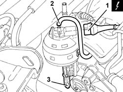
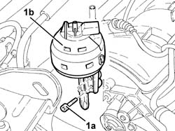

1072D22 Air flow switching device control ACTUATOR - R.R.
- Path
- Procedures > 10 ENGINE > 1072 INLET AND EXHAUST MANIFOLDS > 1072D modular inlet manifold (v.i.s.) > 1072D22 Air flow switching device control ACTUATOR - R.R.
- Kind
- repair procedure (removal / refitting; the operation number is the code)
- Applies to
- engines: 2.0 TS; all production periods
- Interactive page
- https://sloeber94.github.io/elrnDB-a147/en/#/3024938
Applies to: engines: 2.0 TS; all production periods
 Removing
Removing
 Refitting
RefittingEnsure that the ignition key is in the OFF postition, then disconnect the battery negative terminal.
 | Name | Connector |
|---|---|---|
- | Battery |
Proceed with the removal 1016A40 ignition coil cover on cylinder head- r+r .
Proceed with the removal 1008C10 power unit upper reaction link r r .
Proceed with the removal 4130B10 power steering fluid resevoir r r .
1. Disconnect the electrical connection from the enablement solenoid of the changeover device actuator.
| Name | Connector |
|---|---|---|
1 | Variable geometry control solenoid |
2. Disconnect the vacuum intake pipe from the air flow switching device actuator and release it from the fastening.
3. Disconnect the linkage for the air flow switching cotrol actuator.

Applies to: engines: 2.0 TS; all production periods
1. Undo the bolts (1a) and remove the air flow switching control actuator (1b).

Applies to: engines: 2.0 TS; all production periods
Refitting
RemovingPlace the air flow switch control actuator back in its housing.
Connect the linkag for the air flow switching control actuator.
Connect the air flow switching control actuator vacuum intake pipe and fasten it.
Connect the electrical connection from the enablement solenoid of the changeover device actuator.
Proceed with the refitting 4130B10 power steering fluid resevoir r r .
Proceed with the refitting 1008C10 power unit upper reaction link r r .
Proceed with the refitting 1016A40 ignition coil cover on cylinder head- r+r .
Connect the battery terminal (-).
Topics linked from this page (5)
- 1008C10 power unit upper reaction link r r
- 1016A40 ignition coil cover on cylinder head- r+r
- 4130B10 power steering fluid resevoir r r
- A1B Battery ( Connectors )
- L15 Variable geometry control solenoid
Topics that link to this page (5)
- 3330C10 (PUMP) - MASTER CYLINDER R.R.
- 3330C37 pipe from brake fluid reservoir to master cylinder (pump) - r r for rhd versions
- 3330D11 brake servo - r r including seperation from master cylinder - facia lining removed for rhd version
- 4130B20 power steering pump r r
- 4130B40 outlet pipe from pump to power steering case r r